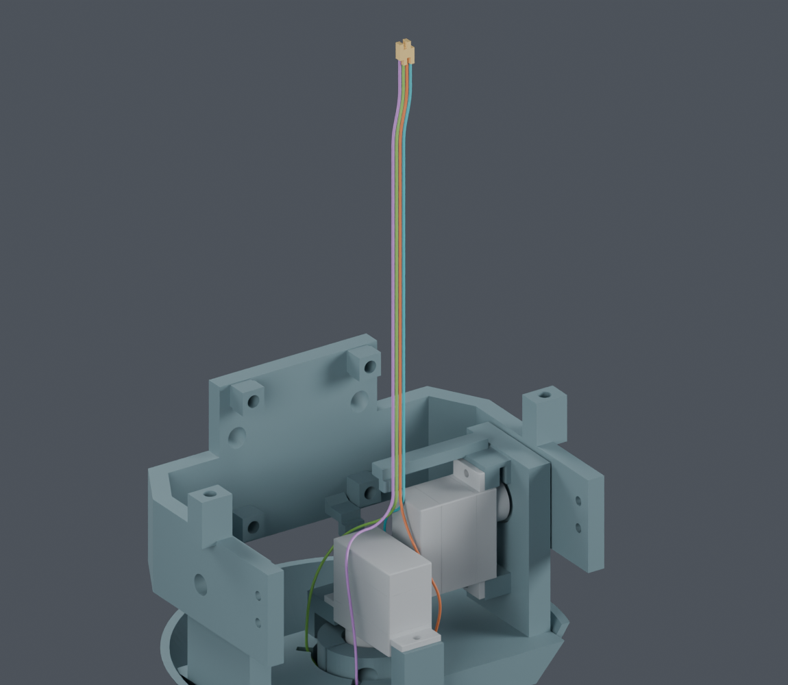
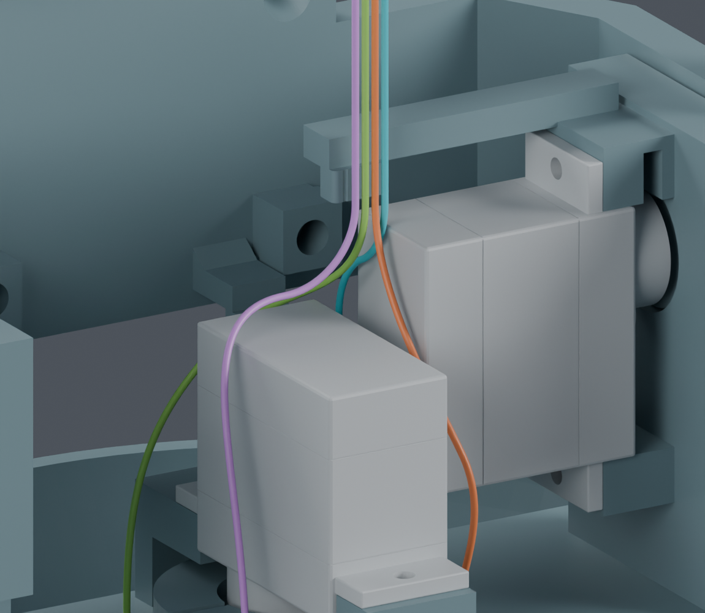

独立装配候选，主模型 M1.47 未改。上部穿入、回位、入座与四段弯线已按同样较大端子预留尺寸通过连续名义几何检查；身体侧完整供线、扎带和真实端子入壳仍未完成，制造图未放行。
| 步骤 | 结果与限制 |
|---|---|
| 从暂存位置退回，再转入弯曲路线 | 4 组整段端子扫掠与微小初始转向通过；需要下方余线能退让 |
| 按槽位 3 → 2 → 1 → 0 逐根穿入 | 4205 个有限位置及 1228 个连续区间通过，其他导线保留；编号不是电气针脚号 |
| 全部穿出后回位 | 41 个位置及 256 个连续区间通过；另有全程曲率、长度与平行线间距界限 |
| 接到入座与弯线动作 | 名义坐标衔接通过；同样较大预留盒的入座 256 个连续区间、弯线 1735 个连续区间通过。查看后续复核 |


导线外径 0.6604 mm。金色端子为 1 × 1.8 × 4.1 mm 请求空间，ASSUMED，不是厂家完整最大尺寸。普通结构及线间留 0.3 mm；端子之间仅检查不穿透。
末端直线至少保留 5.025 mm，长度差由自由直线补偿。当前分配不是供应商裁线尺寸。真实端子、下方供线、扎带及其余跨关节线路/FPC 仍需完成。
当前上部检查没有放置身体侧尚未送入的材料，每根约需处理 140–162 mm 的暂存段，随工序变化。它不是给最终线束额外加长。
接下来评估头部在机身外先穿线，身体端保持松散，再核对完整带线总成落位与身体侧理线。旧桥/轴承装配检查不能直接代替。
独立 Blender 文件 · 完整说明 · 上部连续穿入 · 运动界限推导 · 连续回位 · 全程曲率与长度 · 回退衔接 · 来源校验